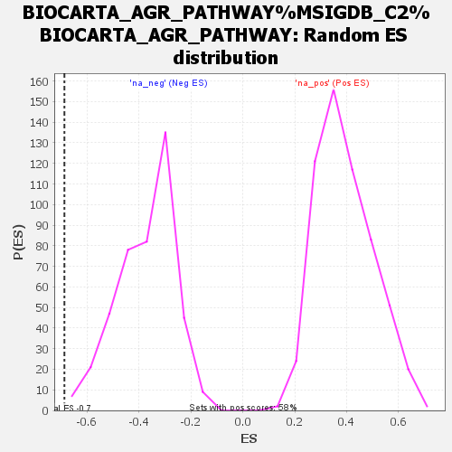

| | | Dataset | ranked |
| Phenotype | NoPhenotypeAvailable |
| Upregulated in class | na_neg |
| GeneSet | BIOCARTA_AGR_PATHWAY%MSIGDB_C2%BIOCARTA_AGR_PATHWAY |
| Enrichment Score (ES) | -0.6878471 |
| Normalized Enrichment Score (NES) | -1.8429571 |
| Nominal p-value | 0.0023584906 |
| FDR q-value | 0.30160993 |
| FWER p-Value | 0.965 |
Table: GSEA Results Summary
 Fig 1: Enrichment plot: BIOCARTA_AGR_PATHWAY%MSIGDB_C2%BIOCARTA_AGR_PATHWAY
Fig 1: Enrichment plot: BIOCARTA_AGR_PATHWAY%MSIGDB_C2%BIOCARTA_AGR_PATHWAY
Profile of the Running ES Score & Positions of GeneSet Members on the Rank Ordered List
| SYMBOL | RANK IN GENE LIST | RANK METRIC SCORE | RUNNING ES | CORE ENRICHMENT | | 1 | EGFR | 1454 | 0.519 | -0.0250 | No |
| 2 | CDC42 | 3016 | 0.282 | -0.0872 | No |
| 3 | NRG1 | 3951 | 0.204 | -0.1200 | No |
| 4 | GIT2 | 6009 | 0.085 | -0.2389 | No |
| 5 | DMD | 6998 | 0.040 | -0.2961 | No |
| 6 | RAC1 | 7453 | 0.022 | -0.3219 | No |
| 7 | MAPK8 | 7624 | 0.016 | -0.3306 | No |
| 8 | NRG3 | 8703 | -0.024 | -0.3956 | No |
| 9 | JUN | 8865 | -0.031 | -0.4018 | No |
| 10 | SP1 | 10479 | -0.101 | -0.4906 | No |
| 11 | MAPK1 | 10614 | -0.107 | -0.4852 | No |
| 12 | LAMA4 | 10727 | -0.113 | -0.4778 | No |
| 13 | ITGB1 | 11384 | -0.150 | -0.4998 | No |
| 14 | DAG1 | 14363 | -0.479 | -0.6262 | Yes |
| 15 | MAPK3 | 15036 | -0.676 | -0.5816 | Yes |
| 16 | PAK4 | 15223 | -0.758 | -0.4957 | Yes |
| 17 | AGRN | 15655 | -1.112 | -0.3798 | Yes |
| 18 | DVL1 | 15782 | -1.414 | -0.2057 | Yes |
| 19 | PAK1 | 15816 | -1.634 | 0.0027 | Yes |
Table: GSEA details [plain text format]

Fig 2: BIOCARTA_AGR_PATHWAY%MSIGDB_C2%BIOCARTA_AGR_PATHWAY: Random ES distribution
Gene set null distribution of ES for BIOCARTA_AGR_PATHWAY%MSIGDB_C2%BIOCARTA_AGR_PATHWAY